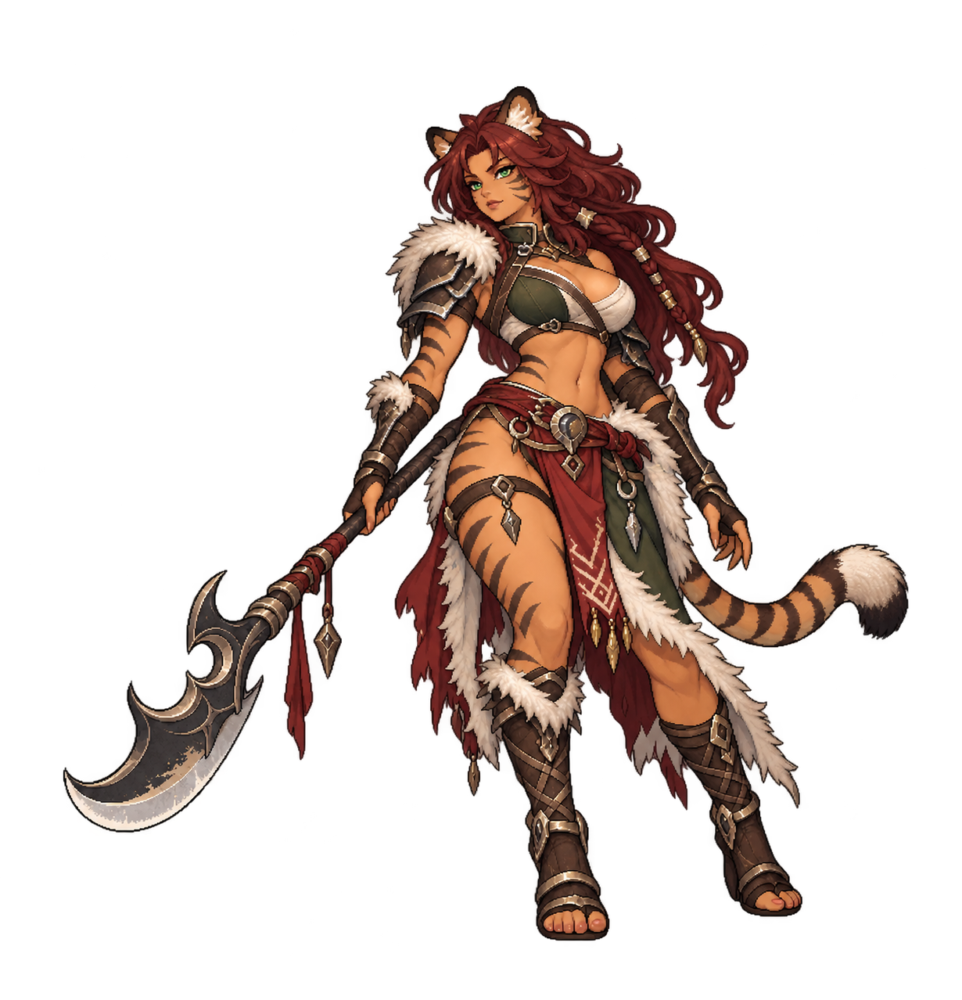
Verdant · BossVelkara Moonfang
Beastwoman
Encounter proposal · art review pending A fast duelist who exposes one defender before a readable sweeping attack.
Telegraph Crescent Test on one living Front hero. Use an ordinary attack between the test and Moonfang Sweep; do not retarget a defeated hero.
Your answer: Cleanse Exposed, shield the threatened hero, or use the visible wind-up to push the boss into Broken.
Action draft & balance assumptions
HP0.95×ATK0.92×DEF0.9×SPEED1.05×
Multipliers against an existing same-mode, same-level, same-tier encounter budget, not additions to current stage stats.
Prototype Break gauge: 32. 32 is an Event prototype fixture only; Campaign, Hard, Tower, Raid and Labyrinth must resolve their existing content formula instead of copying this number.
Basic · No cooldownBeastwoman Strike
Proposed effect: damage · resolved combat power 88
Active 1 · CD 2Crescent Test
Proposed effect: pierce · resolved combat power 125
Active 2 · CD 3Hunter's Brace
Proposed effect: guard · resolved combat power 105
Ultimate · CD 5Moonfang Sweep
Proposed effect: aoe · resolved combat power 150
Balance risk
Fast piercing hits can punish fragile fronts. Keep Speed at the stated relative budget and do not chain two heavy actions without a hero opportunity.
Before this can ship
- Register an explicit enemy definition and approved sprite mapping.
- Bind typed effects instead of relying on the current natural-language EnemyEffect mapper.
- Implement and test the proposed intent/AI order; current ordinary cooldown priority does not establish this pattern.
Existing catalogue keys: runtime-exposed, runtime-guard. Matching names alone do not establish a shared interaction.
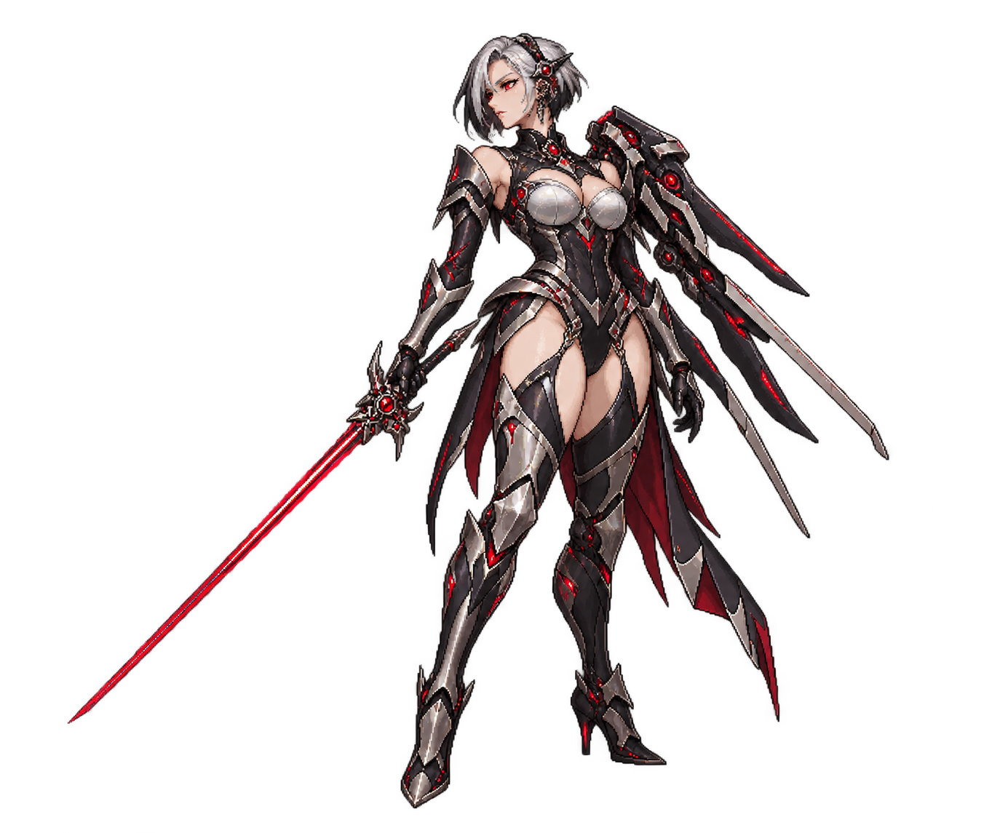
Radiant · BossSeraxis, Chrome Empress
Cyborg
Encounter proposal · art review pending A chrome fencer who alternates defense with a piercing rapier commitment.
Declare the guard first, then one rapier target. The area finish is announced before its action and never gains a bonus turn.
Your answer: Use dispel where the implemented shield/buff is removable; cleansing Exposed and saving burst for a real Broken window stay useful alternatives.
Action draft & balance assumptions
HP1.05×ATK0.9×DEF1.05×SPEED0.98×
Multipliers against an existing same-mode, same-level, same-tier encounter budget, not additions to current stage stats.
Prototype Break gauge: 32. 32 is an Event prototype fixture only; Campaign, Hard, Tower, Raid and Labyrinth must resolve their existing content formula instead of copying this number.
Basic · No cooldownCyborg Strike
Proposed effect: damage · resolved combat power 88
Active 1 · CD 2Chrome Guard
Proposed effect: guard · resolved combat power 105
Active 2 · CD 3Redline Thrust
Proposed effect: pierce · resolved combat power 145
Ultimate · CD 5Imperial Vector
Proposed effect: aoe · resolved combat power 145
Balance risk
Current Guard adds a numeric Shield rather than a removable status. A dispel counter must not be advertised until shield-removal rules are implemented explicitly.
Before this can ship
- Register an explicit enemy definition and approved sprite mapping.
- Bind typed effects instead of relying on the current natural-language EnemyEffect mapper.
- Implement and test the proposed intent/AI order; current ordinary cooldown priority does not establish this pattern.
Existing catalogue keys: runtime-guard, runtime-exposed. Matching names alone do not establish a shared interaction.
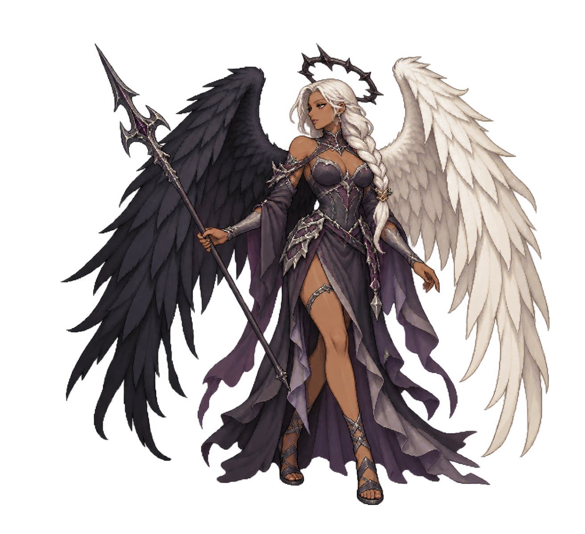
Umbra · BossNaevra, Fallen Seraph
Fallen Angel
Encounter proposal · art review pending A fallen angel who weakens the party before committing to a broad spear strike.
Cast Ashen Benediction before the announced Descent, with at least one hero action between them. Never add a second control effect.
Your answer: Cleanse Weakened or use Resistance support; the tell gives time to choose recovery instead of spending every turn on damage.
Action draft & balance assumptions
HP1×ATK0.88×DEF0.95×SPEED1×
Multipliers against an existing same-mode, same-level, same-tier encounter budget, not additions to current stage stats.
Prototype Break gauge: 32. 32 is an Event prototype fixture only; Campaign, Hard, Tower, Raid and Labyrinth must resolve their existing content formula instead of copying this number.
Basic · No cooldownFallen Angel Strike
Proposed effect: damage · resolved combat power 88
Active 1 · CD 3Ashen Benediction
Proposed effect: charm_aoe · resolved combat power 105
Reuse the existing Weakened rider; despite this legacy effect key, it does not redirect ally actions.
Active 2 · CD 2Broken Halo
Proposed effect: damage · resolved combat power 140
Ultimate · CD 5Duskfall Descent
Proposed effect: aoe · resolved combat power 155
Balance risk
The existing charm_aoe effect actually applies Weakened, not Charm action redirection. Display the actual status and bind typed effects deliberately rather than inferring from the name.
Before this can ship
- Register an explicit enemy definition and approved sprite mapping.
- Bind typed effects instead of relying on the current natural-language EnemyEffect mapper.
- Implement and test the proposed intent/AI order; current ordinary cooldown priority does not establish this pattern.
Existing catalogue keys: runtime-weakened, runtime-cleanse. Matching names alone do not establish a shared interaction.
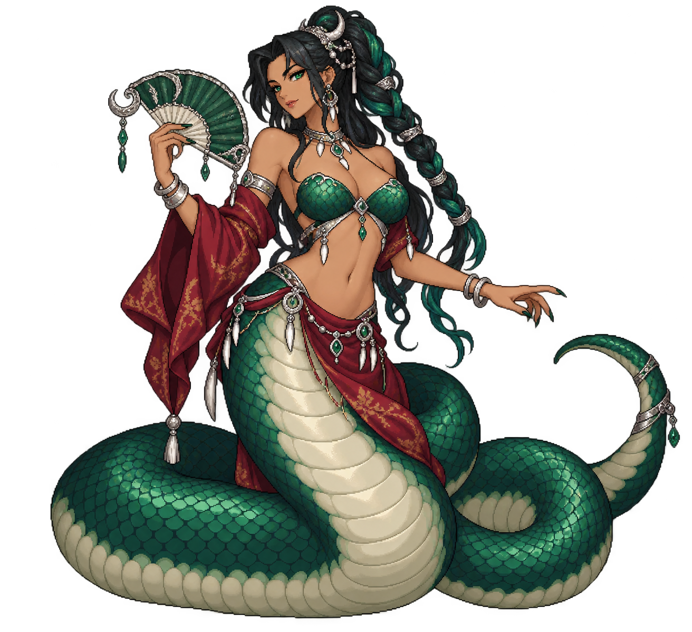
Verdant · BossIsshara Coilqueen
Lamia
Encounter proposal · art review pending A lamia attrition fight with one clearly telegraphed Root target.
Announce a single Root target; no party Root and no application through the target's shared control-immunity window. A normal attack separates control attempts.
Your answer: Cleanse or resist the Root, and protect a threatened support. There is no unlimited summon or private venom meter.
Action draft & balance assumptions
HP1×ATK0.86×DEF1×SPEED0.96×
Multipliers against an existing same-mode, same-level, same-tier encounter budget, not additions to current stage stats.
Prototype Break gauge: 32. 32 is an Event prototype fixture only; Campaign, Hard, Tower, Raid and Labyrinth must resolve their existing content formula instead of copying this number.
Basic · No cooldownLamia Strike
Proposed effect: damage · resolved combat power 88
Active 1 · CD 2Fang's Courtesy
Proposed effect: damage · resolved combat power 115
Planned rider: existing Root for one action on one target; explicit enemy binding required.
Active 2 · CD 3Coiled Shelter
Proposed effect: guard · resolved combat power 110
Ultimate · CD 5Jade Fan Sweep
Proposed effect: aoe · resolved combat power 145
Balance risk
Root exists for current heroes but the generic enemy text mapper cannot apply it. Enemy rider binding and anti-chain immunity tests are required before integration.
Before this can ship
- Register an explicit enemy definition and approved sprite mapping.
- Bind typed effects instead of relying on the current natural-language EnemyEffect mapper.
- Implement and test the proposed intent/AI order; current ordinary cooldown priority does not establish this pattern.
Existing catalogue keys: runtime-root, runtime-guard, runtime-cleanse. Matching names alone do not establish a shared interaction.
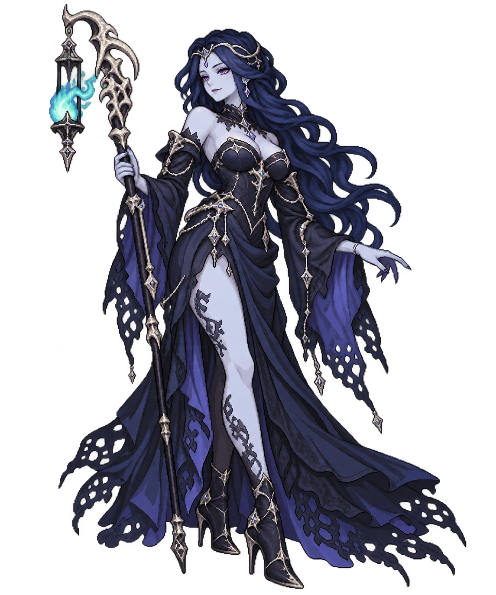
Umbra · BossMorvella Gravebloom
Undead
Encounter proposal · art review pending An undead sorceress whose recovery creates a target-priority decision.
Announce Funeral Light before its opportunity; use at most one heal per cooldown cycle. No resurrection or repeated threshold revival.
Your answer: Concentrate damage or Break before the heal. Proposed healing-reduction heroes would become an additional future answer, not an already shipped interaction.
Action draft & balance assumptions
HP0.92×ATK0.86×DEF0.92×SPEED0.97×
Multipliers against an existing same-mode, same-level, same-tier encounter budget, not additions to current stage stats.
Prototype Break gauge: 32. 32 is an Event prototype fixture only; Campaign, Hard, Tower, Raid and Labyrinth must resolve their existing content formula instead of copying this number.
Basic · No cooldownUndead Strike
Proposed effect: damage · resolved combat power 88
Active 1 · CD 3Funeral Light
Proposed effect: heal · resolved combat power 80
Target self; cap useful recovery to actual missing HP and record it in test metrics.
Active 2 · CD 2Lantern Needle
Proposed effect: pierce · resolved combat power 135
Ultimate · CD 5Gravebloom Requiem
Proposed effect: aoe · resolved combat power 145
Balance risk
Healing uses the current ATK/Power formula, not a free percent-HP refill. Track effective healing and require a full-party damage team to make steady progress.
Before this can ship
- Register an explicit enemy definition and approved sprite mapping.
- Bind typed effects instead of relying on the current natural-language EnemyEffect mapper.
- Implement and test the proposed intent/AI order; current ordinary cooldown priority does not establish this pattern.
Existing catalogue keys: runtime-exposed, runtime-cleanse. Matching names alone do not establish a shared interaction.
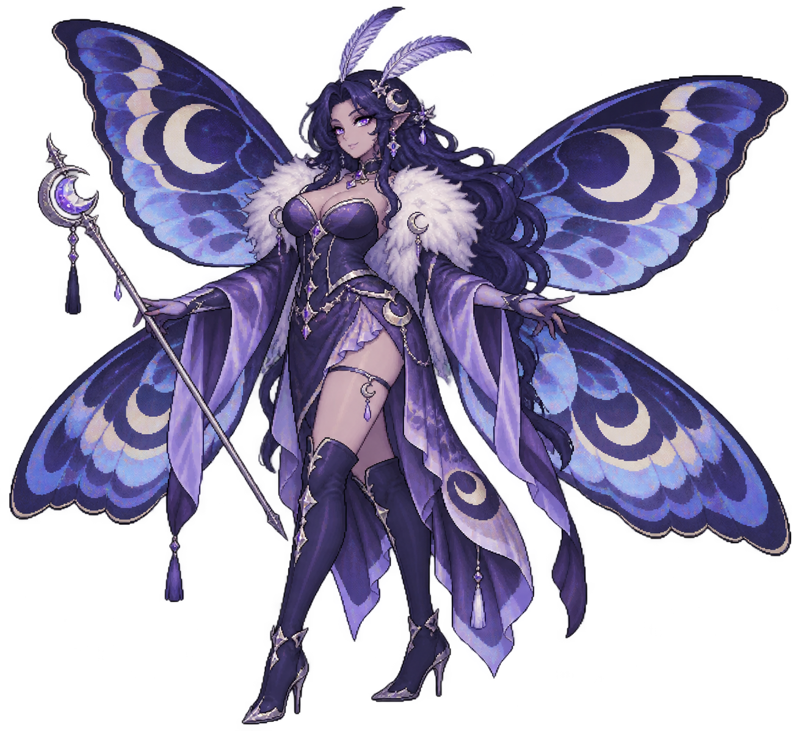
Tide · BossVespyria Moonweaver
Mothkin
Encounter proposal · art review pending A moth queen who slows one target and signals a wide wing beat.
Slow a single hero, then declare Lunar Wingbeat. No Freeze, team action-gauge theft or repeat action.
Your answer: Cleanse the slow, keep the healer protected, and reserve area recovery for the wing beat.
Action draft & balance assumptions
HP0.95×ATK0.88×DEF0.88×SPEED1.04×
Multipliers against an existing same-mode, same-level, same-tier encounter budget, not additions to current stage stats.
Prototype Break gauge: 32. 32 is an Event prototype fixture only; Campaign, Hard, Tower, Raid and Labyrinth must resolve their existing content formula instead of copying this number.
Basic · No cooldownMothkin Strike
Proposed effect: damage · resolved combat power 88
Active 1 · CD 2Moonthread Needle
Proposed effect: damage · resolved combat power 115
Planned rider: existing Chill/Speed reduction on the main target for two turns; explicit enemy binding required.
Active 2 · CD 3Silk Cocoon
Proposed effect: guard · resolved combat power 100
Ultimate · CD 5Lunar Wingbeat
Proposed effect: aoe · resolved combat power 150
Balance risk
A Speed debuff can reduce player opportunities. Bound the slow to the existing status and keep the shared immunity rules unchanged.
Before this can ship
- Register an explicit enemy definition and approved sprite mapping.
- Bind typed effects instead of relying on the current natural-language EnemyEffect mapper.
- Implement and test the proposed intent/AI order; current ordinary cooldown priority does not establish this pattern.
Existing catalogue keys: runtime-chill, runtime-cleanse, runtime-guard. Matching names alone do not establish a shared interaction.
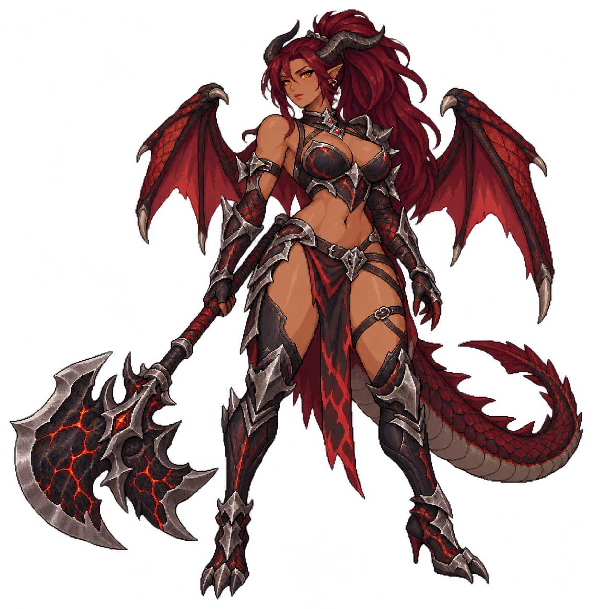
Ember · BossKaelyra Cinderwing
Dragonkin
Encounter proposal · art review pending A dragonkin boss who applies ordinary Burn before a heavy axe strike.
Burn a single target and declare the next heavy axe action. Do not consume allied Burn or create a new Cinder resource.
Your answer: Cleanse Burn or heal directly; current Burn ticks HP through shields, so shielding alone is deliberately incomplete protection.
Action draft & balance assumptions
HP1×ATK0.9×DEF1×SPEED0.94×
Multipliers against an existing same-mode, same-level, same-tier encounter budget, not additions to current stage stats.
Prototype Break gauge: 32. 32 is an Event prototype fixture only; Campaign, Hard, Tower, Raid and Labyrinth must resolve their existing content formula instead of copying this number.
Basic · No cooldownDragonkin Strike
Proposed effect: damage · resolved combat power 88
Active 1 · CD 2Cinder Rake
Proposed effect: burn · resolved combat power 115
Active 2 · CD 3Obsidian Hew
Proposed effect: damage · resolved combat power 150
Ultimate · CD 5Cinderwing Descent
Proposed effect: aoe · resolved combat power 150
Balance risk
The generic EnemyEffect mapper does not recognize burn. Typed binding is required. Never alias this to Shadowfire or add Break on DoT ticks.
Before this can ship
- Register an explicit enemy definition and approved sprite mapping.
- Bind typed effects instead of relying on the current natural-language EnemyEffect mapper.
- Implement and test the proposed intent/AI order; current ordinary cooldown priority does not establish this pattern.
Existing catalogue keys: runtime-burn, runtime-cleanse. Matching names alone do not establish a shared interaction.
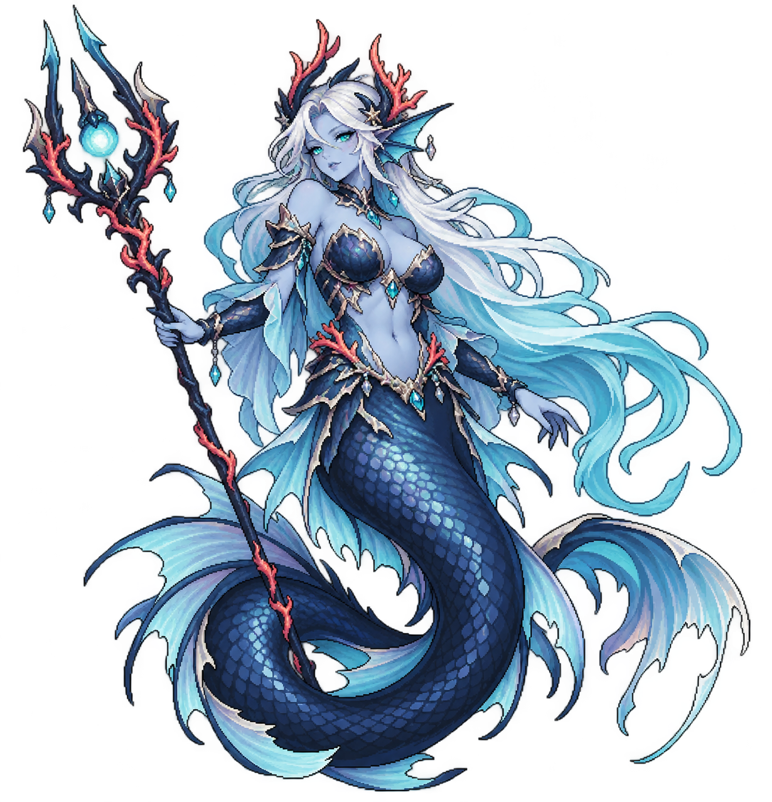
Tide · BossThalorya, Abyssal Siren
Abyssal
Encounter proposal · art review pending A water-body siren who drains one hero before a wide tidal attack.
Target one hero with the drain, then announce the tide. No Charm, forced friendly attack or repeat drain between cooldowns.
Your answer: Protect the announced target, cleanse Exposed, and burst during Broken. Healing reduction is a proposed-kit future answer only.
Action draft & balance assumptions
HP0.92×ATK0.88×DEF0.92×SPEED1×
Multipliers against an existing same-mode, same-level, same-tier encounter budget, not additions to current stage stats.
Prototype Break gauge: 32. 32 is an Event prototype fixture only; Campaign, Hard, Tower, Raid and Labyrinth must resolve their existing content formula instead of copying this number.
Basic · No cooldownAbyssal Strike
Proposed effect: damage · resolved combat power 88
Active 1 · CD 3Undertow Kiss
Proposed effect: drain · resolved combat power 110
Existing Drain heals the caster for 18% Max HP; the dedicated enemy version should cap this at 6% and requires an explicit implementation change.
Active 2 · CD 2Blackcoral Thrust
Proposed effect: pierce · resolved combat power 135
Ultimate · CD 5Abyssal Tide
Proposed effect: aoe · resolved combat power 145
Balance risk
Unmodified runtime Drain would recover 18% boss HP and is not approved for this design. Use the proposed capped enemy rider or replace it with a plain attack before testing.
Before this can ship
- Register an explicit enemy definition and approved sprite mapping.
- Bind typed effects instead of relying on the current natural-language EnemyEffect mapper.
- Implement and test the proposed intent/AI order; current ordinary cooldown priority does not establish this pattern.
Existing catalogue keys: runtime-drain, runtime-exposed. Matching names alone do not establish a shared interaction.
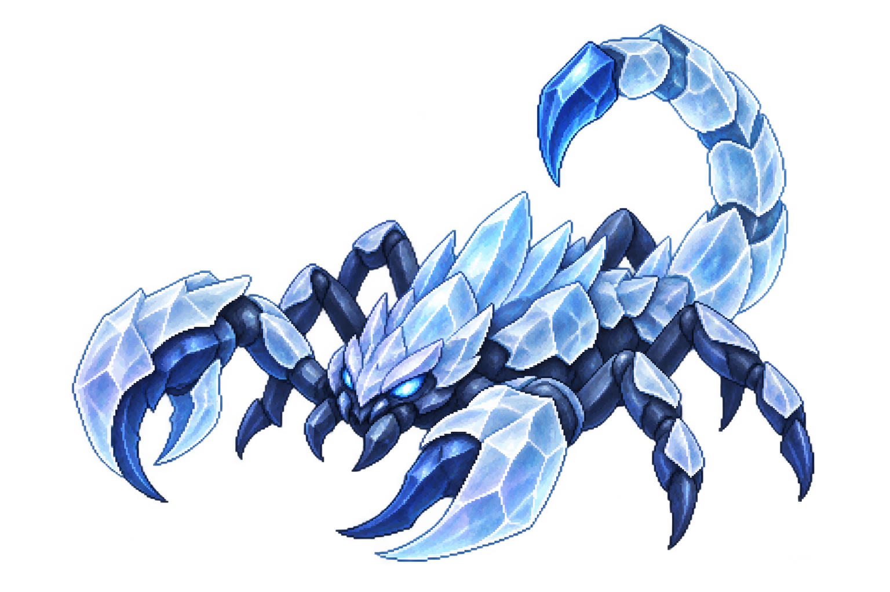
Tide · EliteFrostglass Scorpion
Arthropod
Encounter proposal · art review pending A low crystal elite that tests one defender rather than sweeping the whole party.
Use the visible tail tell for the next piercing target; no hidden third strike or full-party Freeze.
Your answer: Break its small Elite gauge, cleanse Exposed or focus it before the wind-up.
Action draft & balance assumptions
HP0.9×ATK0.88×DEF1.05×SPEED0.9×
Multipliers against an existing same-mode, same-level, same-tier encounter budget, not additions to current stage stats.
Prototype Break gauge: 3. This creature fixture does not replace the content-based boss gauge rules.
Basic · No cooldownArthropod Strike
Proposed effect: damage · resolved combat power 88
Active 1 · CD 2Glass Pincer
Proposed effect: pierce · resolved combat power 115
Active 2 · CD 3Crystal Brace
Proposed effect: guard · resolved combat power 100
Balance risk
Defensive elite packs should not contain multiple simultaneous guard loops.
Before this can ship
- Register an explicit enemy definition and approved sprite mapping.
- Bind typed effects instead of relying on the current natural-language EnemyEffect mapper.
- Implement and test the proposed intent/AI order; current ordinary cooldown priority does not establish this pattern.
Existing catalogue keys: runtime-exposed, runtime-guard. Matching names alone do not establish a shared interaction.
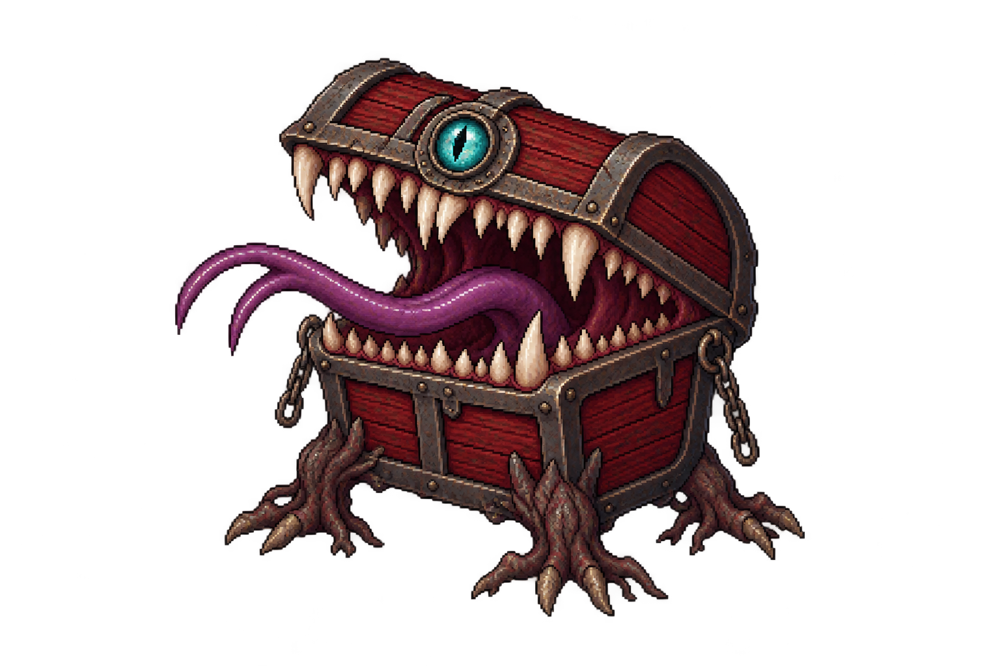
Umbra · EliteRiftjaw Mimic
Mimic
Encounter proposal · art review pending A compact ambusher with a strong, announced bite and a normal recovery gap.
A visible open-lid tell precedes Lid Slam. A normal attack follows; no scripted free opening attack and no hidden execution threshold.
Your answer: Shield the marked defender or Break the Elite before its bite.
Action draft & balance assumptions
HP0.88×ATK0.94×DEF0.88×SPEED0.94×
Multipliers against an existing same-mode, same-level, same-tier encounter budget, not additions to current stage stats.
Prototype Break gauge: 3. This creature fixture does not replace the content-based boss gauge rules.
Basic · No cooldownMimic Strike
Proposed effect: damage · resolved combat power 88
Active 1 · CD 3Lid Slam
Proposed effect: damage · resolved combat power 130
Active 2 · CD 2Chain Snap
Proposed effect: pierce · resolved combat power 110
Balance risk
Do not multiply the opener through surprise, first-turn and low-HP bonuses.
Before this can ship
- Register an explicit enemy definition and approved sprite mapping.
- Bind typed effects instead of relying on the current natural-language EnemyEffect mapper.
- Implement and test the proposed intent/AI order; current ordinary cooldown priority does not establish this pattern.
Existing catalogue keys: runtime-exposed. Matching names alone do not establish a shared interaction.
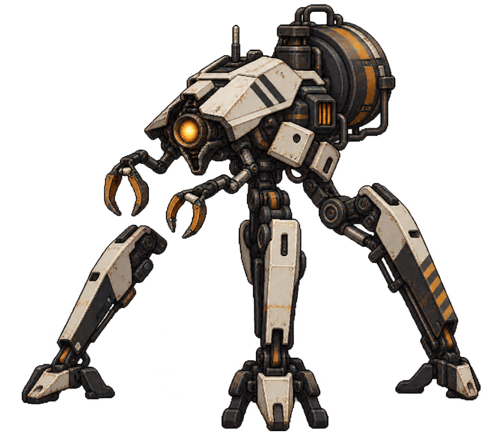
Radiant · EliteIronstep Reclaimer
Cyborg
Encounter proposal · art review pending A salvage walker that braces and protects its own reactor while allies attack.
Show a reactor-brace tell, then return to normal pulse attacks. First pass has no ally resurrection or endless drone spawning.
Your answer: Focus dangerous offensive partners first or Break the walker before repeated bracing extends the fight.
Action draft & balance assumptions
HP1×ATK0.78×DEF1.08×SPEED0.86×
Multipliers against an existing same-mode, same-level, same-tier encounter budget, not additions to current stage stats.
Prototype Break gauge: 3. This creature fixture does not replace the content-based boss gauge rules.
Basic · No cooldownCyborg Strike
Proposed effect: damage · resolved combat power 88
Active 1 · CD 3Reactor Brace
Proposed effect: guard · resolved combat power 95
Active 2 · CD 3Salvage Pulse
Proposed effect: aoe · resolved combat power 105
Balance risk
Guard supplies self-healing as well as Shield. Measure the added effective HP; do not grant unadvertised ally barriers.
Before this can ship
- Register an explicit enemy definition and approved sprite mapping.
- Bind typed effects instead of relying on the current natural-language EnemyEffect mapper.
- Implement and test the proposed intent/AI order; current ordinary cooldown priority does not establish this pattern.
Existing catalogue keys: runtime-guard. Matching names alone do not establish a shared interaction.
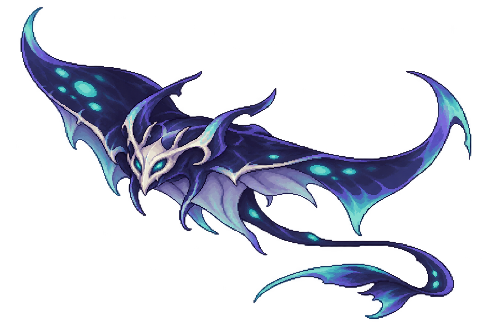
Umbra · CommonVeilfin Ray
Abyssal
Encounter proposal · art review pending A fast, fragile common enemy whose silhouette contrasts with ground beasts.
One readable sweeping action, then ordinary single-target attacks. No invulnerability because it floats and no automatic evasion bonus.
Your answer: Area attacks remove the low-HP ray; a defensive Basic is enough to absorb its modest pressure.
Action draft & balance assumptions
HP0.75×ATK0.8×DEF0.78×SPEED1.08×
Multipliers against an existing same-mode, same-level, same-tier encounter budget, not additions to current stage stats.
Prototype Break gauge: 0. This creature fixture does not replace the content-based boss gauge rules.
Basic · No cooldownAbyssal Strike
Proposed effect: damage · resolved combat power 88
Active 1 · CD 3Veilfin Sweep
Proposed effect: aoe · resolved combat power 90
Balance risk
Large ray packs multiply area damage. Use at most two per first-pass pack.
Before this can ship
- Register an explicit enemy definition and approved sprite mapping.
- Bind typed effects instead of relying on the current natural-language EnemyEffect mapper.
- Implement and test the proposed intent/AI order; current ordinary cooldown priority does not establish this pattern.
Existing catalogue keys: None proposed. Matching names alone do not establish a shared interaction.